怎麼讀這份考古與年份總覽
- 這份是什麼
- 整理學長姐留下的水產動物疾病學期中考：2022 助教卷（完整 10 題）、2023 助教預告與實際考題（學長姐回憶）、109、107、105 學年度、2019 範圍筆記、蝦與無脊椎動物（2022 配對卷、2020、108 上）、以及 2022（B07）三位老師的出題心得。老師已全部換人，只當出題方式的參考。
- 三種老師分工（依考古）
- 助教部分：養殖與水質、魚類生理、免疫與疫苗，手寫簡答，年年類似，與本學期講義（蘇豐傑老師第一週、魚類生理、魚類免疫）重疊最多。蝦與無脊椎老師：英文病例判讀、組織切片辨識、配對 Keys、國考式選擇題。細菌與寄生蟲老師：全手寫或單複選，題型是病原、症狀、診斷、處置。後兩部分目前沒有對應的講義，詳解只是依題目敘述與一般知識的推論。
- 標示規則（請先看）
- 考試可能怎麼問
（依考古推測） - 助教部分：養殖模式優缺點、水質參數、魚類趨向性、軟硬骨魚氣體交換與滲透壓、Bohr／Root effect、免疫器官與疫苗給予方式，在 2022、2023、109、107 都出現。蝦與無脊椎：病例敘述 → 病名與病原；病原英文名要會。
| 年份 | 部分 | 題型 | 位置 |
|---|---|---|---|
| 2022 | 助教 | 10 題簡答（共 100 分） | 第 2 節 |
| 2023 | 助教（學長姐回憶） | 7 題簡答＋加分（10/20/20/15/15/20/+10） | 第 3 節 |
| 109 | 助教＋他（照片所見） | 8 題，含死亡率曲線圖、Bohr／Root 圖 | 第 4 節 |
| 107 | 助教＋他（照片所見） | 6 題：診斷流程 20、白色結節 20、爛鰓 10 等 | 第 5 節 |
| 105 | 寄生蟲為主（照片所見） | 9 題簡答（6/4/10/10/10/10/4/4/4） | 第 6 節 |
| 2019 | 範圍筆記 | 麻醉、呼吸、滲透壓、寄生蟲、疫苗（助教） | 第 7 節 |
| 2022 | 蝦與無脊椎（配對卷） | Keys 配對＋9 題英文病例 | 第 8 節 |
| 2020 | 蝦與無脊椎 | 9 題（看圖、選擇）＋國考題＋加分題 | 第 9 節 |
| 108 上 | 無脊椎（只拍到前 3 題） | 英文病例選擇題 | 第 10 節 |
| 2022 B07 | 三位老師心得 | 細菌、寄生蟲、蝦的出題型態 | 第 11 節 |
2022 助教卷（水產動物疾病學期中考，10 題）
2022 卷是這份考古裡唯一完整、題目清楚的助教卷，10 題手寫簡答，共 100 分。後面幾年的助教題大多是它的重複或改寫。
原卷照片（助教卷 1 張，姓名學號已遮蓋）
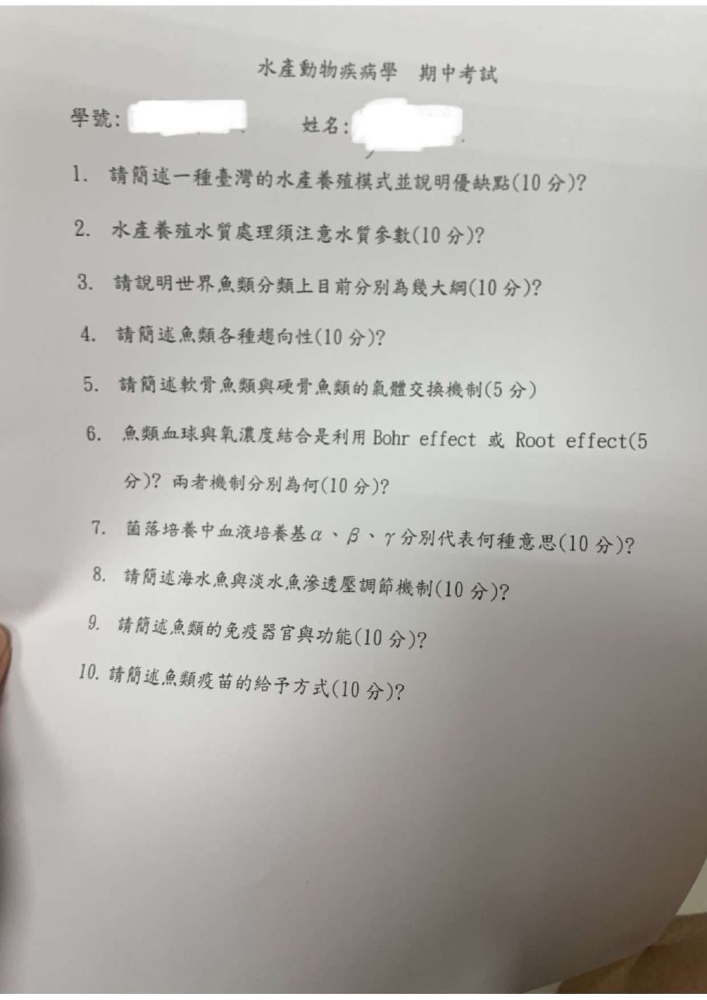
| 題號 | 題目 | 配分 | 對應講義 |
|---|---|---|---|
| 1 | 簡述一種臺灣水產養殖模式並說明優缺點 | 10 | 水質頁 第 2 節 |
| 2 | 水產養殖水質處理須注意水質參數 | 10 | 水質頁 第 4–6 節 |
| 3 | 世界魚類分類上目前分別為幾大綱 | 10 | 生理上 p.6 |
| 4 | 簡述魚類各種趨向性 | 10 | 生理上 p.24 |
| 5 | 簡述軟骨魚類與硬骨魚類的氣體交換機制 | 5 | 生理上 p.40、生理上 p.44 |
| 6 | 魚類血球與氧結合是利用 Bohr effect 或 Root effect（5）？兩者機制分別為何（10） | 15 | 生理上 p.51 |
| 7 | 菌落培養中血液培養基 α、β、γ 分別代表何種意思 | 10 | 講義尚未涵蓋 |
| 8 | 簡述海水魚與淡水魚滲透壓調節機制 | 10 | 生理下 p.41、生理下 p.44、生理下 p.46 |
| 9 | 簡述魚類的免疫器官與功能 | 10 | 免疫 p.53、免疫 p.54 |
| 10 | 簡述魚類疫苗的給予方式 | 10 | 免疫 p.86–免疫 p.90 |
以下答案是整理者依本學期講義寫的參考答案，不是官方答案。老師換人，實際評分標準不明。每題後的「老師角度」是補充說明，標準答案的邊界以你上課聽到的為準。
怎麼答：題目只問「一種」，選你最熟的，寫 定義一句＋優點 2–3＋缺點 2–3＋獸醫重點一句，比列滿七種更安全。
範例（池塘式，講義 水質 p.9–水質 p.12）：設備門檻較低、適合多種經濟魚蝦、管理經驗成熟；風險是颱風、豪雨、熱浪、倒藻、底泥厭氧與有機物累積，天候與底泥影響大。獸醫重點：先看清晨 DO、pH 日變化、氨氮與亞硝酸鹽，浮頭不要先判定感染。
範例（RAS，水質 p.18）：優點是降低自然災害變因、水質可即時監控、用水與排放量較可控；缺點是依賴機械過濾、生物濾床、增氧、殺菌，濾床失效或病原進入會在高密度下快速擴散。
臨床意義：每個模式的優缺點，最後都會落到「水質風險型態」不同；這是講義第一週的主線。常見延伸問法：為什麼 RAS 的亞硝酸鹽容易失控（清洗濾材過度、消毒劑殘留）？混養池為什麼用藥麻煩（休藥期不同）？
學長姐版本（非官方）：2023 助教預告寫池塘「優點利潤很大；缺點風險大，天災、停電、停水、颱風、水管破」；107 學長姐寫箱網。兩種寫法都只有骨架，講義內容更完整。
怎麼答：每個參數寫「為什麼要量 → 太高或太低會怎樣 → 怎麼處置」。講義的順序：先量急性致死因子（DO、H2S、急性 pH、毒性 NH3），再追慢性壓力（亞硝酸鹽、低度氨、ORP；水質 p.27）。
關鍵因果鏈：TAN = NH3 + NH4+，NH3 比例隨 pH、水溫上升（水質 p.35）；亞硝酸鹽氧化血紅素成變性血紅素，Cl- 競爭進入鰓（水質 p.38）；H2S 在底泥缺氧時由硫酸鹽還原產生（水質 p.42）；DO 急救優先序增氧＞停餌＞減少擾動＞必要換水（水質 p.31）。
常見延伸問法：為什麼診斷前先量水質（水質 p.5）？同樣 TAN，什麼條件更危險？亞硝酸鹽中毒為何水中有氧魚仍缺氧？
學長姐（2023 助教預告，非官方）只寫三個：pH（過低使血液載氧能力下降、過高腐蝕鰓）、水溫（藻類生長、倒藻、遮陽傘與換水）、氨氮 NH3（毒性、症狀、控制）。若只被要求三個，這三個是被預告的組合。
講義沒有的補充說法要小心：學長姐寫「腐殖酸降低 pH」「添加硝化細菌」為氨氮控制手段，講義只寫「加菌前先確認 DO、鹼度、消毒劑殘留」（水質 p.36），不要把加菌當成唯一做法。
講義內容（生理上 p.6）：盲鰻亞綱（Myxini）最原始、無眼無脊椎無顎；七鰓鰻亞綱（Petromyzontiformes）屬無顎類圓口綱，吸盤口器；軟骨魚綱（Chondrichthyes）鯊、魟、銀鮫，骨骼完全軟骨、盾鱗；肉鰭魚總綱（Sarcopterygii）僅六種肺魚與兩種腔棘魚；輻鰭魚總綱（Actinopterygii）占魚種 95% 以上，鰭由骨質鰭條支撐，有鰓蓋與鰾，是養殖主體。
為什麼要標 ⚠：講義的標題混用「亞綱、綱、總綱」，所以「幾大綱」沒有唯一數字。建議答「依本課講義分 5 類群」，並附一句「傳統教科書常合併為無顎綱、軟骨魚綱、硬骨魚綱（含肉鰭魚與輻鰭魚）三大類」。
臨床意義：養殖與臨床遇到的幾乎都是輻鰭魚（硬骨魚）；軟骨魚在後面考題中作為「氣體交換、滲透壓」的對照組。
講義（生理上 p.24）：
① 趨光性：正趨光游向光源，負趨光迴避；燈光誘魚漁法的基礎。
② 趨流性：正趨流性逆流而上（如鮭鱒洄游），負趨流性順流而下。
③ 趨溫性：變溫動物主動找最適溫度；冷水性魚（鱒、鮭）偏好 10–18℃，溫水性魚（鯉、鯰）20–30℃。
④ 趨鹽性：廣鹽性魚可在淡海水間遷移，狹鹽性只能在特定鹽度範圍；涉及鰓離子交換與腎臟調整。
⑤ 趨化性：透過嗅覺與味覺感知化學物質（食物氣味、警戒素、返回出生地）。
助教預告版（學長姐整理，非官方；生理上 p.24沒有）：趨光性（水溫越高趨光越弱）、趨電性（感電反應、麻痺反應、趨陽反應三種，只有趨陽反應為趨電性；直流電場達一定值時魚游向陽極）、趨觸性（趨固性）（對固體刺激的定位反應）、趨化性、趨流性。
怎麼答最安全：兩份都寫進去（光、流、溫、鹽、化、電、觸），各一句定義加一個例子；講義有的放前面。講義沒有的趨電、趨觸，若被問到，標「助教補充」。
常見延伸問法：為什麼用燈光誘魚？為什麼洄游魚能回到出生河流（趨化性）？電魚、電擊麻醉的原理是什麼（趨電性，補充）？
講義（生理上 p.38–生理上 p.40、生理上 p.44）：
① 逆水流效應：血液與水流方向相反，維持氧濃度梯度，得到約 80% 氧氣交換，硬骨魚廣泛採用。
② 順水流效應：血液與水同方向，只約 50%，血氧與水中氧氣很快達成平衡就不再交換；講義寫軟骨魚採用，效率較低但節省能量，軟骨魚活動量較小所以能適應。
③ 硬骨魚有鰓蓋與逆流，效率較高，活動量大需要高效率。
學長姐助教預告（非官方）：與講義相同（硬骨魚逆流 80%、軟骨魚順流 50%，軟骨魚需不停游動才不缺氧），附逆流／順流示意圖。
怎麼答：寫出「方向、效率、為什麼適合該類魚」三點，並畫一張簡圖（鰓小葉內血液方向、水流方向、0→100 的氧飽和梯度）。
講義（生理上 p.51，講在「鰾的氣體腺充氣機制」）：波爾效應＝血中 CO2 升高使血紅蛋白對氧氣的親和力降低，促進氧氣釋放到氣體腺；魯特效應＝血液 pH 降低使血紅蛋白對氧氣的親和力降低，也促進釋放；氣體腺還會產生乳酸降低周圍 pH，促進氧氣釋放（需要消耗能量）。
講義兩者寫得很像，沒有分出差別。助教預告筆記（學長姐，非官方）給了分辨：波爾效應＝氫離子（低 pH）和二氧化碳降低血紅蛋白與氧的親和力，促進血紅蛋白釋放氧；魯特效應＝許多魚類血氧容量隨二氧化碳分壓升高而下降，深海魚所需的溶氧量較高，鰾是封閉式。圖：normal 曲線最左上，Bohr 向右移，Root 向右移且最大飽和度下降（曲線的高度也降低）。
題目的 5 分在問什麼：「利用 Bohr 或 Root」，答案不是二選一，是「都有；魚類的特色在於 Root effect 很強」，再各 5 分寫機制。
常見延伸問法：為什麼魚鰾可以充氣到高壓（乳酸＋Root）？為什麼運動後魚的組織更容易得到氧（Bohr，組織 CO2、乳酸高）？
109、107 也考（見第 4、5 節），圖都是同一張 normal／Bohr／Root 曲線。
讀書補充Note - Bohr 與 Root 怎麼一眼分開（補充：依一般教科書／文獻，待核對）
1. 看氧解離曲線
- Bohr：整條曲線向右移（P50 變大），但在高氧分壓時仍可達到接近 100% 飽和。
- Root：不只右移，高氧分壓下也無法飽和（曲線高度下降），像是血紅素被酸「鎖」在低親和力、少一部分攜氧能力。
2. 生理用途
- Bohr：鰓得氧（pH 較高）→ 組織卸氧（pH 較低）。
- Root：在鰾與眼脈絡膜網，局部酸化讓氧從血紅素「推」進高壓氣體；這是魚鰾能在深水充氣的關鍵。
講義兩個寫法接近，若老師要你「分別說機制」，請寫上面這個差別（最大飽和度）。以上為一般教科書概念，講義與學長姐版本沒有完整寫出，待核對老師上課說法。
讀書補充Note - 軟骨魚真的是順流嗎？（補充：依一般教科書／文獻，待核對）
講義 生理上 p.44 與學長姐助教預告都寫「軟骨魚順水流 50%」。但一般魚類生理學教科書描述軟骨魚（鯊、魟）的鰓也是逆流交換，只是構造不同（鰓隔較長、沒有鰓蓋、需靠游動或鰓孔泵送水）。這是講義與一般認知不同的地方。
- 考試怎麼答：照講義寫「軟骨魚順流、硬骨魚逆流」，因為助教與老師的出題範圍是講義。
- 臨床／學習怎麼想：若之後在其他書讀到「軟骨魚也是逆流」，不是你記錯，是講義的簡化。要在考卷上改寫前，先問授課者。
為什麼這樣答：血液培養基（常為羊血或馬血）上，細菌溶血素把紅血球溶解的程度不同。α 是不完全溶血，血紅素被氧化成高鐵血紅素而呈綠色；β 是完全溶血，產生透明環；γ 沒有溶血。
臨床意義（補充）：魚病中，常用溶血性協助初步鑑別，例如 Aeromonas hydrophila 與 Streptococcus iniae 一般為 β 溶血（依一般文獻，待核對）。血瓊脂只是篩檢，仍要搭配革蘭染色、氧化酶、生化與分子鑑定。
常見延伸問法：魚類細菌分離為什麼多用 TSA 加血液？海水魚要加多少鹽？（講義沒有，標待補）。
講義尚未涵蓋：本學期魚病講義沒有細菌學各論；2022（B07）學長姐心得顯示細菌老師以病原與生化特性出題，之後有講義再補。
講義（生理下 p.41、生理下 p.44）：海水魚的氯細胞（富含粒線體細胞 MRC，分布於鰓上皮，含大量 Na⁺-K⁺-ATPase）以主動運輸將 Na⁺、Cl⁻、K⁺ 排出體外，同時吸收少量水分，對抗滲透壓造成的水分流失；淡水魚的氯細胞則吸收環境中稀少的離子，並排出過多的水分。氯細胞的數量與活性會隨鹽度調整，是洄游魚類（如鮭）能在海淡水轉換的關鍵。
講義的軟骨魚（生理下 p.46）：血液中儲存高濃度尿素（350–400 mM，是硬骨魚的 100 倍以上），使血液滲透壓與海水相近而避免脫水；以 TMAO 保護組織蛋白免於尿素變性；腎臟能重吸收尿素而非排出。部分鯊魚因此能進入河口甚至淡水。
學長姐版本（107、109；非官方）：海水魚體液濃度比海水低，水一直跑出去，所以要一直喝水，鰓的氯細胞排除多餘離子；淡水魚體液濃度比水高，水一直進來，不用喝水但一直排尿，鰓內的 MRC 吸收鹽分。這個方向正確，但學長姐寫「魚細胞內濃度」不精確，應寫體液（血漿）滲透壓。
怎麼答：用表格：環境／體液與環境的滲透壓關係／水往哪走／喝不喝水／鰓（氯細胞）／腎臟與尿。再寫軟骨魚尿素那一段當加分。
常見延伸問法：為什麼低鹽度或酸化會影響魚（MRC 結構與功能受影響，生理下 p.44）？洄游魚進入海水前鰓有什麼變化？
講義（免疫 p.53–免疫 p.54，英文）：
① Kidney：血液流經腎臟很慢，抗原被「困住」，接觸網狀細胞、巨噬細胞、淋巴球；前（頭）腎是「memory」發生的地方。
② Spleen：次於腎臟，參與免疫反應與血球生成，內含淋巴球與巨噬細胞。
③ Liver：可能參與補體（complement cascade）成分的製造，對抵抗力重要，但「not real clear」。
④ 硬骨魚的造血部位主要是腎臟與脾臟（p.54）。另外講義免疫 p.87：注射抗原後的免疫反應由脾臟的 melanomacrophage centers 與橢球體（ellipsoids）產生。
學長姐（2023 助教預告，109 也寫；非官方）：與講義一致，另寫鰓黏液細胞分泌抗菌胜肽與溶菌酶（屬黏膜／先天免疫）。
怎麼答：用「器官—功能」兩欄，並標出腎臟＝memory、脾臟＝反應＋造血、肝臟＝補體三個關鍵字（助教預告筆記標「**重要**」）。可加一句：魚沒有骨髓與淋巴結，腎臟（頭腎）取代這兩者的角色（補充：依一般教科書）。
常見延伸問法：為什麼疫苗注射後要看脾臟與腎臟？皮質醇急性緊迫時淋巴球為什麼往頭腎與胸腺跑（講義壓力段落）？
講義（免疫 p.86–免疫 p.90）：
① injection 注射：硬骨魚注射抗原後，免疫反應由脾臟的 MMC 與 ellipsoids 產生。
② oral 口服：直接把疫苗添加到餌料，講義稱「最理想、方便」，可減少魚的緊迫、用量較浸泡型少而經濟，是最適用於稚魚免疫的方法；做法有酒精包埋法、飼料混合重新塑形。
③ immersion 浸泡：操作簡單、容易汙染、免疫機制尚待闡明。
學長姐（2019 助教；非官方）：口服和注射兩種比較，口服因通過腸道可刺激 local 與 systemic 免疫，但要注意抗原不要被破壞；注射會增加魚的緊迫，主要刺激腎臟免疫，腸道免疫一點點。
怎麼答：做三欄表（途徑／優點／缺點）；缺點務必寫出：口服＝抗原在消化道可能被破壞、劑量不易控制（補充）；注射＝逐尾操作、緊迫、小魚不適合（補充）；浸泡＝容易汙染、機制不明（講義）。2019 手寫題問「what kind of vaccine would you choose + 投予方式（pros & cons）」，要寫你選哪一種、為什麼（依魚體大小、數量、病原）。
國考對照：102-2 第 65 題「已有商品化油質疫苗可應用於養殖鮭魚且效果佳」官方答案 B（Aeromonas salmonicida）。其餘國考題未出現疫苗給藥途徑。
常見延伸問法：不活化、減毒、次單位、DNA、類毒素疫苗的差別（講義 免疫 p.92 分類頁）；為什麼稚魚多用浸泡或口服？
讀書補充Note - 疫苗途徑比較表（補充：依一般教科書／文獻，待核對）
- 注射（腹腔／肌肉）：免疫效果通常最好、劑量準確，可搭配佐劑（如油質疫苗）。缺點：要逐尾抓魚、麻醉、費工與緊迫，只適合較大的魚，且有注射部位副作用的疑慮。
- 浸泡：大量小魚一次處理，勞力少。缺點：抗原量大、保護期較短、效果依魚齡。
- 口服：最省工、無緊迫。缺點：抗原在胃腸可能被破壞，劑量取決於攝食，免疫持續性較差，常需包埋保護。
以上為一般教科書概念；講義只寫了口服與浸泡的幾句，老師要的優缺點寬度請以上課講法為準。
2023 助教預告與實際考題（學長姐回憶）
2023 年助教考前就口頭預告哪幾題會考；學長姐把預告題整理成筆記，考後又寫下實際題目與配分。兩份都是回憶，不是考卷。
| 題號 | 2023 實際題目（學長姐回憶） | 配分 | 本頁對應 |
|---|---|---|---|
| 1 | 寫一個養殖模式及優缺點 | 10 | 2022 Q1 |
| 2 | 水質處理要注意的三個東西 | 20 | 2022 Q2 |
| 3 | 魚類有幾種趨性 | 20 | 2022 Q4 |
| 4 | 解釋軟骨魚、硬骨魚氧氣利用的差別 | 15 | 2022 Q5 |
| 5 | 硬骨魚、軟骨魚分別用什麼效應呼吸（學長姐標「怪」） | 15 | 見下方推論 |
| 6 | 魚的免疫器官 | 20 | 2022 Q9 |
| 加分 | 魚的疫苗方式及優缺點 | 10 | 2022 Q10 |
學長姐說第 5 題很怪：助教預告會考 Bohr／Root，題目卻沒出現。但題目原文是「分別用什麼效應呼吸」，而 109 學年的同類題是「硬骨魚與軟骨魚鰓上氧氣交換分別為哪種效應？」，學長姐手寫答案是逆水流效應（80%）與順水流效應（50%）（見第 4 節）。因此 2023 的「第 5 題」很可能問的是逆水流／順水流效應，不是 Bohr／Root。這是整理者依字面與 109 年題目的推論，不是官方確認。
助教預告筆記照片（學長姐整理，非官方，3 張）
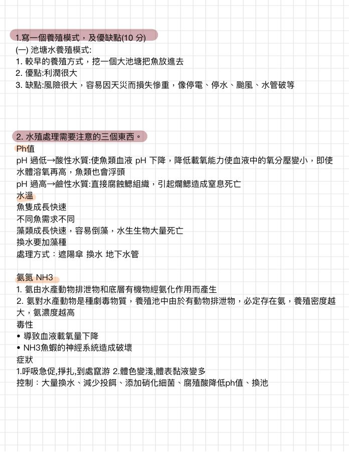
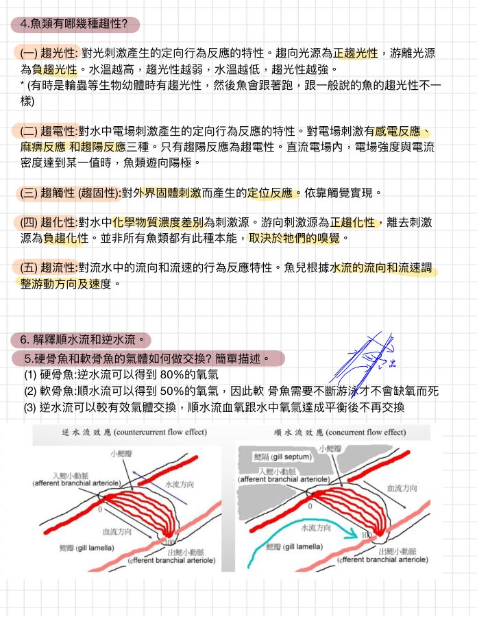
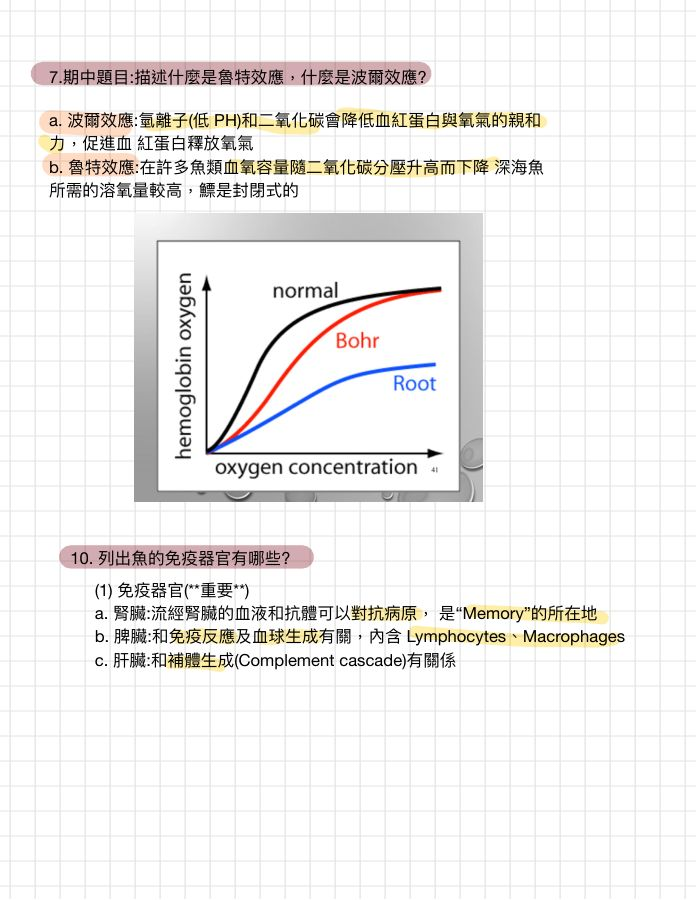
- 預告筆記的題號（1、2、4、5、6、7、10）與 2022 卷（第 2 節）不同，是助教自己那一年的預告題單編號（缺 3、8、9），內容與 2022 卷高度重疊。
- 筆記中 2 號題「水質處理三個東西」的答案已併入 2022 Q2 的說明。
- 學長姐心得：要把握助教的部分與蝦與無脊椎老師的補分，因為後半（細菌、寄生蟲）換了老師，不知道教什麼也不知道考什麼；蝦與無脊椎那一部分考配合題 10 題、內容與 2022 部分重複，老師後來自己說考的不是單選題，意思不明。
109 學年度水生動物疾病學期中考
照片只有一頁，共 8 題（總分 75，若有後續題照片未拍到）。藍筆手寫答案是學長姐的，非官方。
原卷照片（1 張，學號姓名欄空白）
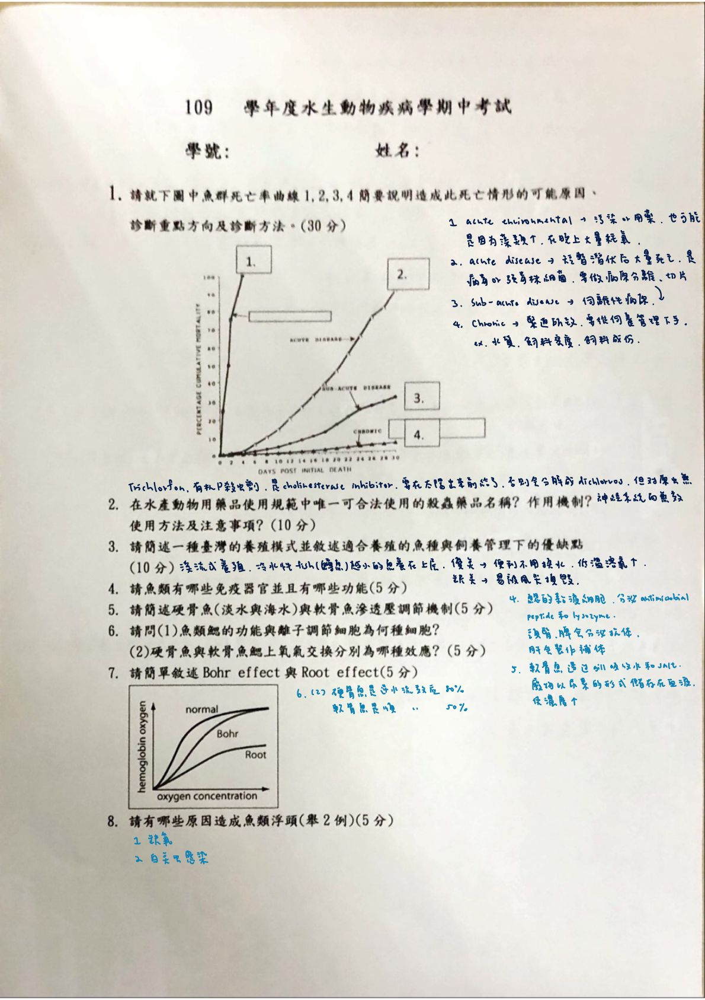
| 題號 | 題目 | 配分 | 對應 |
|---|---|---|---|
| 1 | 就圖中魚群死亡率曲線 1、2、3、4，簡要說明造成此死亡情形的可能原因、診斷重點方向及診斷方法 | 30 | 水質頁 第 3 節 |
| 2 | 水產動物用藥品使用規範中唯一可合法使用的殺蟲藥品名稱？作用機制？使用方法及注意事項 | 10 | 講義尚未涵蓋 |
| 3 | 簡述一種臺灣的養殖模式並敘述適合養殖的魚種與飼養管理下的優缺點 | 10 | 2022 Q1 |
| 4 | 魚類有哪些免疫器官並且有哪些功能 | 5 | 2022 Q9 |
| 5 | 簡述硬骨魚（淡水與海水）與軟骨魚滲透壓調節機制 | 5 | 2022 Q8 |
| 6 | (1) 魚類鰓的功能與離子調節細胞為何種細胞？(2) 硬骨魚與軟骨魚鰓上氧氣交換分別為哪種效應？ | 5 | 2022 Q5 |
| 7 | 請簡單敘述 Bohr effect 與 Root effect（附曲線圖） | 5 | 2022 Q6 |
| 8 | 請有哪些原因造成魚類浮頭（舉 2 例） | 5 | 水質頁 |
為什麼這樣答：死亡曲線的「形狀」本身就是診斷線索。曲線 1 陡升、幾天內全死，且不隨時間逐日累積，典型的是急性環境事件（缺氧、毒物、污染、投藥錯誤）；曲線 2 先有潛伏期再爆發性上升，是急性傳染病（病毒、強毒細菌）；曲線 3 緩慢累積是亞急性疾病（寄生蟲、機會性病原與環境壓力併發）；曲線 4 幾乎貼底是慢性問題（營養、水質長期偏差）。
學長姐手寫（非官方）：1 acute environmental → 污染或用藥，也可能是藻類夜間大量耗氧；2 acute disease → 經過潛伏後大量死亡，是病毒或強毒株細菌，要做病原分離、切片；3 sub-acute → 伺機性病原；4 chronic → 要從飼養管理下手，例如水質、飼料變質、飼料成分。
診斷重點方向（對應講義）：
① 問診（水質頁 水質 p.50）：死亡開始時間、速度、死亡魚大小是否一致；最近 7 天天氣、換水、投餌、消毒、用藥、轉池。
② 先量水（水質 p.28、水質 p.51）：急性大量死亡先排除水質與毒性。
③ 臨床檢查與採樣：外觀（傷口、腹水、爛鰓、凸眼）、麻醉後濕壓片、剖檢、細菌分離、組織切片、血液抹片（學長姐 107 版寫法，見第 5 節）、必要時 PCR（補充）。
臨床意義：講義主線「急性大量死亡先想水質或毒性；慢性零星死亡再整合病原、營養與管理」（水質 p.50）與這四條曲線完全對應。常見延伸問法：曲線 1 為什麼先量 DO、NH3？曲線 3 為什麼要看密度與投餌？（密度、投餌 → 水質 → 免疫壓力 → 病原爆發，水質 p.46）
得分提醒：30 分的題，建議四條曲線各一段，每段寫「原因、診斷重點、診斷方法」三點；老師未給圖標答案，以上為整理者推論，⚠ 評分標準待確認。
為什麼這樣答：學長姐手寫：Trichlorfon，有機磷殺蟲劑，是 cholinesterase inhibitor（乙醯膽鹼酯酶抑制劑），要在太陽出來前施用，否則會分解成 dichlorvos（以下字跡難辨，⚠），作用在寄生蟲的神經系統（非官方）。
作用機制（補充：依一般藥理）：有機磷抑制乙醯膽鹼酯酶，使神經突觸乙醯膽鹼堆積，造成寄生蟲神經肌肉過度興奮而死亡；對動物也有毒性，所以劑量與水溫、水質（pH 越高越快分解）影響很大。
使用方法：魚病的殺蟲劑以藥浴（浸泡）為主，不是口服或注射；本講義沒有寫劑量與休藥期，這裡不補。
國考對照：105-1 第 67 題（鯉魚鰓部蠕動蟲體，依規範可用哪種正面表列藥物浸泡）官方答案 B（題目選項寫「三氯仿」，依題意指的應是三氯松 trichlorfon，⚠ 譯名待確認）；101-2 第 62 題（貧血魚、體表大量蟲體）官方答案 B 有機磷；115-2 第 72 題魚蛭可用三氯松（官方答案尚未取得）。這些題說明三氯松是水產殺蟲的核心藥。
常見延伸問法：為什麼卵殺不掉（要重複用藥，見 105 第 5、6 題的學長姐筆記）？水溫與 pH 如何影響？對養殖蝦蟹有沒有毒？（補充：有機磷對甲殼類毒性高，待核對）
學長姐手寫（非官方）：「溪流式養殖；冷水性魚（鱒魚）；越小的魚養在上層；優點：便利不用換水、低溫溶氧↑；缺點：易被風災（?）毀壞」。字跡「風災」不確定。
講義（水質 p.14–水質 p.15）：溪流式適合冷水性魚類；水溫較低時溶氧較高，但上游污染可造成整批異常。開放水體處置不能只看單場，要評估水源、鄰近場、流向與近期氣候事件。
怎麼答：這題多了「適合的魚種」與「飼養管理」，所以要寫魚種（鱒、鮭等冷水魚）、水源溫度需求、飼養管理（密度、水流、投餌）、優點、缺點五項。學長姐「越小的魚養在上層」可能是上課說法，講義沒有，標待核對。
常見延伸問法：水質出問題時，溪流式跟池塘式的處置差在哪（不能只靠換水或增氧機，要查水源）？
學長姐手寫（非官方）：鰓的黏液細胞分泌 antimicrobial peptide 和 lysozyme；腎臟、脾臟會分泌抗體；肝臟會製作補體。
詳解見 2022 Q9。需要修正的是「腎臟、脾臟分泌抗體」：講義寫腎臟是 memory 所在、脾臟參與免疫反應；抗體是由漿細胞（B 細胞分化）分泌，這些器官是漿細胞所在處（補充：依一般教科書）。
學長姐手寫（非官方）：(2) 硬骨魚是逆水流效應 80%，軟骨魚是順水流 50%。與講義 生理上 p.40 一致。
講義：氯細胞主要分布於鰓上皮、含大量 Na⁺-K⁺-ATPase，海水魚排離子、淡水魚吸離子（生理下 p.41、生理下 p.44）。鰓的其他功能（講義 生理上 p.38 附近）包含氣體交換與排泄；排氨（補充）也是鰓的重要功能。
這題支持第 3 節的推論：「分別用哪種效應」＝逆水流／順水流效應，不是 Bohr／Root；2023 助教卷「第 5 題很怪」可能就是這題的改寫。
注意：軟骨魚順流的說法是講義的簡化，見 第 2 節黃框。
詳解見 2022 Q6。圖中 normal 曲線最左上、Bohr 右移、Root 右移且高度下降（無法飽和）。寫 5 分的話：兩個效應各一行定義，加一句「Root 效應是鰾與眼充氧的基礎」。
學長姐手寫（非官方）：1 缺氧；2 「白…」感染（字跡難辨，⚠ 待確認）。
講義（水質 p.4）：同一個「浮頭」可由低溶氧、氨氮、亞硝酸鹽、鰓寄生蟲或細菌性鰓病造成，第一步必須先量水質。亞硝酸鹽是「水裡有氧，魚仍缺氧」（水質 p.38）。
怎麼答：選兩個機轉不同的，各一句：① 低 DO：夜間藻類呼吸、水車不足、悶熱 → 氧不夠；② 亞硝酸鹽：氧化血紅素成變性血紅素 → 血液不能攜氧。
國考對照：103-1 第 65 題鰓黴病「整群魚頭浮出水面」（官方答案 D）；101-2 第 61 題水質不良淡水場浮頭、爛尾、滑走性長桿菌＝Flavobacterium columnare（官方答案 C）；106-2 第 77 題浮頭、鰓紅白雜陳＝Branchiomyces（官方答案 B）。
讀書補充Note - 浮頭的四大類原因怎麼分（補充：依一般教科書／文獻，待核對）
- 缺氧：清晨最明顯，靠水車、入水口；先增氧。
- 氨氮／pH 高：鰓刺激、竄游、黏液增加；午後 pH 高時更危險。
- 亞硝酸鹽：鰓色偏褐，血液呈棕色；DO 正常也浮頭。
- 鰓病（寄生蟲、細菌、黴菌）：先鏡檢鰓壓片，鰓黴病、柱狀病、指環蟲在國考出現過。
老師常用「先量什麼、再看什麼」來評分：先水質，再鏡檢。
107 學年度水生動物疾病學期中考
卷面照片共 6 題。紅字（學長姐）與下方打字答案都是非官方。
原卷照片（1 張，姓名學號已遮蓋）
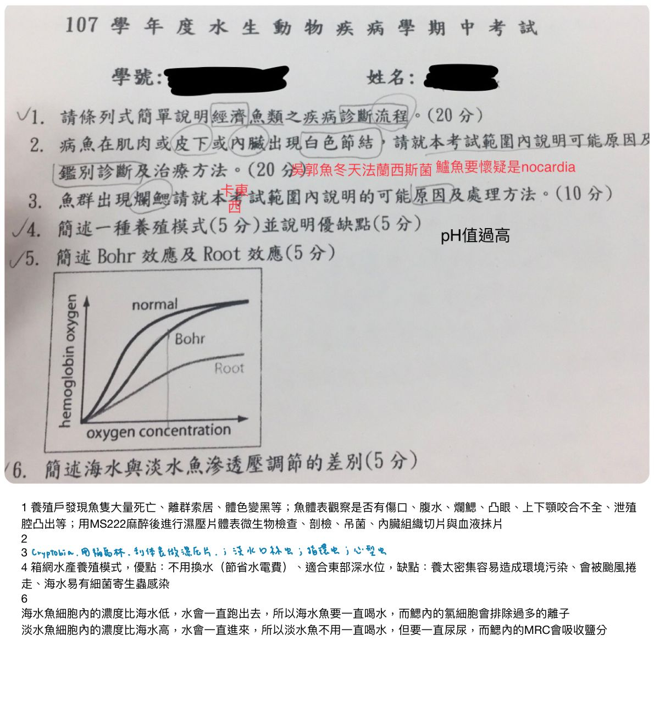
學長姐打字答案（非官方）：養殖戶發現魚隻大量死亡、離群索居、體色變黑等；觀察魚體表是否有傷口、腹水、爛鰓、凸眼、上下顎咬合不全、泄殖腔凸出；用 MS-222 麻醉後進行濕壓片體表微生物檢查、剖檢、吊菌、內臟組織切片與血液抹片。
講義版（水質頁 水質 p.50–水質 p.51）：現場處置優先序 ① 立即測水 → ② 降低急性風險 → ③ 採樣檢驗 → ④ 回推原因 → ⑤ 制定處置；問診模板包含魚種／規格／密度／批次、死亡開始時間與速度、最近 7 天的天氣與管理、現場測值（水溫、DO、pH、鹽度、TAN、NO2-、ORP）、魚體表現（浮頭、靠水車、離群、擦身、體色、鰓色、黏液）。
為什麼這樣答最完整：學長姐版缺少「先量水」，而這是講義最強調的一步。20 分的題建議把兩者合併，條列 6–8 點，每點一行。
臨床意義：「診斷流程」其實就是現場工作順序，老師想看你是不是先排除水質與毒性，再進入病原診斷。
常見延伸問法：為什麼麻醉後再採樣（減少緊迫與傷害、方便操作）？採樣要取哪些器官（鰓、腎、脾、肝、腸）？（補充：依一般教科書）
卷上紅字（學長姐，非官方）：「吳郭魚冬天法蘭西斯菌」「鱸魚要懷疑是 Nocardia」；藍字：Cryptobia、用培養杯、刮體表做濕壓片、淡水白點蟲、指環蟲、心型蟲（手寫字跡難辨，⚠）。
講義內可寫的（水質 p.60）：黃吸蟲（Yellow grub）是複殖吸蟲亞綱（Digenea）彎口屬（Clinostomum），講義有生活史圖（螺 → 魚 → 鳥）。其餘鑑別（細菌、微孢子蟲等）本學期講義尚未涵蓋。
可用的鑑別框架（整理者推論；講義尚未涵蓋）：結節要先分部位（皮下、肌肉、內臟）與魚種／季節，再分病原類：寄生蟲（囊蚴、微孢子蟲、黏液孢子蟲）、細菌（Francisella、Nocardia、Mycobacterium、Photobacterium）、黴菌（Ichthyophonus）。診斷靠壓片鏡檢、抹片染色與培養。
國考對照（官方答案）：101-2 第 58 題鱒魚內臟白色結節、肉芽腫出芽＝Ichthyophonus hoferi（D）；100-2 第 70 題香魚腹腔與內臟大量白色結節＝微孢子蟲（A）；109-1 第 71 題香魚白色結節＝Glugea plecoglossi（D）；107-1 第 77 題海水魚大雨後白色小結節、兩端濃染的無運動性桿菌＝Photobacterium damselae subsp. piscicida（A）；103-2 第 75 題魚努卡氏菌症最常見病徵＝內臟白色結節（B）；101-2 第 69 題體表結節囊胞蟲體有頭尾＝雙生類（複殖吸蟲）幼蟲（A）。這幾題證明結節題每個病原都有固定的魚種／部位／季節線索。
怎麼答（20 分）：先列分類（寄生蟲／細菌／黴菌），每類寫 2 個代表病原＋診斷方法＋處置原則（用藥要依規範），最後加一句「先看水質」。治療細節講義無，標待補。
卷上註記（學長姐，非官方）：「pH 值過高」。
講義內（水質頁）：pH 過高會增加 NH3 比例，使 TAN 的實際毒性上升，NH3 的臨床風險含鰓刺激與呼吸急促；pH 過低影響鰓功能與滲透調節；H2S 損傷黏膜與呼吸道；觀賞魚爛鰓、爛鰭常伴隨氨氮或亞硝酸鹽問題（水質 p.33、水質 p.35、水質 p.43、水質 p.49）。處置見 水質頁 第 5 節。
講義病例 A、D（水質頁 第 7 節）：金魚爛鰓合併指環蟲、泰國獅頭爛鰓合併大量鞭毛蟲與指環蟲，處理方式之一為福馬林（藥浴）。
國考對照：101-2 第 61 題＝Flavobacterium columnare（柱狀病，C）；106-2 第 77 題＝Branchiomyces（鰓黴病，B）；103-1 第 65 題鰓黴病描述（D）。
怎麼答：10 分建議三層：水質（先測、先處置）、寄生蟲（鏡檢鰓壓片）、細菌／黴菌（培養、切片）；處理方法依原因，先改善水質。
學長姐打字答案（非官方）：海水魚細胞內的濃度比海水低，水會一直跑出去，所以要一直喝水，鰓內的氯細胞排除過多離子；淡水魚細胞內濃度比水高，水一直進來，不用一直喝水但要一直尿尿，鰓內的 MRC 吸收鹽分。
方向正確；字詞應改為體液（血漿）滲透壓。詳解請見 2022 Q8。
105 學年度水生動物疾病學期中考（寄生蟲為主）
105 是寄生蟲、生理混合的簡答卷，標題「簡答題（請字跡清晰書寫整齊）」。藍字為學長姐手寫，下方打字答案也是學長姐的，非官方。多數題目講義尚未涵蓋（寄生蟲），只有 Q7–Q9 有對應講義。
原卷照片（1 張，學號姓名欄空白）
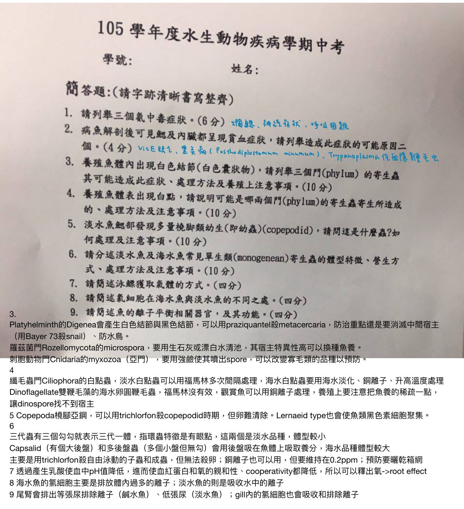
為什麼這樣答：貧血＝血液攜氧或血球量不足。寄生蟲（吸血、住血）、營養缺乏、失血或溶血皆可。講義尚未涵蓋，以上為學長姐答案，非官方。
國考對照：100-1 第 60 題住血寄生蟲：Trypanoplasma 需藉魚蛭傳播（D 為對應敘述；官方答案尚未取得）；101-2 第 62 題魚群貧血、體表大量蟲體，浸泡藥物最有效為有機磷（B）。
補充（依一般教科書，待核對）：水質上亞硝酸鹽造成的棕血症也使血液顏色改變（水質 p.38），可作為「水質原因」的一個選項；但題目問「貧血」，建議優先寫寄生蟲或營養。
學長姐打字答案（非官方）：① 扁形動物門（Platyhelminthes）的複殖類（Digenea）產生白色結節與黑色結節，可用 praziquantel 殺 metacercaria，防治重點是消滅中間宿主（用 Bayer 73 殺螺）、防水鳥；② 羅茲菌門（Rozellomycota）的微孢子蟲（microspora），要用生石灰或漂白水清池，宿主特異性高可換種魚養；③ 刺胞動物門（Cnidaria）的黏液孢子蟲（Myxozoa，亞門），要用強鹼使其噴出孢子，可以改變寡毛類的品種以預防。
講義內：只有黃吸蟲（Digenea，水質 p.60）。其他兩個門講義尚未涵蓋。
老師角度（補充：依一般教科書／文獻，待核對）：這題的得分點是「門→代表蟲→位置→處置→預防」五欄，預防多半是切斷生活史（中間宿主、水鳥、寡毛類）或清池消毒。治療用藥與劑量請依水產用藥規範，這裡不補。
國考對照：100-2 第 70 題＝微孢子蟲（A）；101-2 第 69 題＝雙生類（複殖吸蟲）囊蚴（A）；104-2 第 73 題微孢子蟲「細胞內寄生」（B）。
學長姐打字答案（非官方）：① Ciliophora 白點蟲：淡水白點蟲可用福馬林多次間隔處理，海水白點蟲用海水淡化、銅離子、升高溫度處理；② Dinoflagellate 雙鞭毛藻的海水卵圓鞭毛蟲，福馬林沒效，觀賞魚可用銅離子處理，養殖上要注意把魚養得稀疏一點，讓 dinospore 找不到宿主。
講義內：案例 3 觀賞魚白點，處置原則是先改善水質與穩定魚體，再選擇適合物種與系統的寄生蟲處理（水質 p.54）；病例 G、I 有白點蟲、梨形四膜蟲、卵圓鞭毛蟲卵（水質頁 第 7 節）。寄生蟲生活史與藥物講義尚未涵蓋。
國考對照：101-2 第 68 題淡水魚鰓壓片蟲體在黏液增多的鰓絲上移動＝白點蟲（B）；103-2 第 71 題體表白點「最不可能」是 Gyrodactylus（A）。
怎麼答：用「纖毛蟲 vs 鞭毛藻」兩欄，各寫生活史關鍵（自由游動期最脆弱）與處置；最後加「先量水，再用藥」。
學長姐打字答案（非官方）：Copepoda 橈腳亞綱，可用 trichlorfon 殺 copepodid 時期，但卵難清除；Lernaeid type 也會使魚類黑色素細胞聚集。
為什麼要重複用藥（補充：依一般教科書）：成蟲固著、卵在水中，藥只殺游離的幼蟲與成蟲，所以要依生活史（水溫越高越短）重複投藥，並清池、曬乾，預防再次引入。
國考對照：115-2 第 72 題魚蛭可用三氯松殺滅（官方答案尚未取得）。
學長姐打字答案（非官方）：三代蟲有三個勾勾就表示三代一體，指環蟲特徵是有眼點，這兩個是淡水品種，體型較小；Capsalid（有個大後盤）和多後盤蟲（多個小盤但無勾）會用後盤吸在魚體上吸取養分，海水品種體型較大；主要是用 trichlorfon 殺自由泳動的子蟲和成蟲，但無法殺卵；銅離子也可以用，但要維持在 0.2 ppm；預防要曬乾箱網。
待核對：「三個勾勾＝三代一體」是學長姐的記憶說法，Gyrodactylus 為胎生（體內可見子代），後盤有一對大鉤與邊緣小鉤，這裡不採「三個勾」的說法，標待核對。
國考對照：102-1 第 65 題指環蟲：生活史只在魚體進行，診斷刮取體表及鰓黏液鏡檢（C）；103-1 第 70 題鰓絲蟲體＝Gyrodactyloidea（C）；111-2 第 72 題 Gyrodactylus 敘述（一律給分）；101-2 第 67 題體表黏液蟲體＝單殖吸蟲（B）。
學長姐打字答案（非官方）：透過產生乳酸使血中 pH 值降低，進而使血紅蛋白和氧的親和性、cooperativity 都降低，所以可以釋出氧 → Root effect。
講義（生理上 p.50–生理上 p.51）：氣體腺的充氣機制：波爾效應、魯特效應與乳酸的產生（降低周圍 pH，促進氧氣從血液釋放到氣體腺；需要耗能）。卵圓窗有括約肌可釋放氣體、調節浮力（生理上 p.50）。
得分點：氣體腺 → 乳酸 → 局部酸化 → Root（與 Bohr）效應 → 氧由血紅素釋放到鰾；要寫出耗能與逆流倍增系統（補充：奇網 rete mirabile，講義未見，標補充）。
學長姐打字答案（非官方）：尾腎會排出等張尿排除離子（鹹水魚）、低張尿（淡水魚）；gill 內的氯細胞也會吸收和排除離子。
修正（補充：依一般教科書，待核對）：海水硬骨魚排少量等張或略低張尿，主要靠鰓排鹽，腎臟排二價離子；淡水魚排大量低張（稀）尿。若老師要「器官與功能」，建議寫鰓（氯細胞）、腎臟（尿）、消化道（海水魚吸水）三個。
2019 期中範圍筆記（學長姐手寫）
這頁不是考卷，是學長姐手寫整理的 2019 期中範圍，加上紅字與藍字補充。可當作「那一年老師與助教各考哪些主題」的線索。
照片（1 張，非官方）
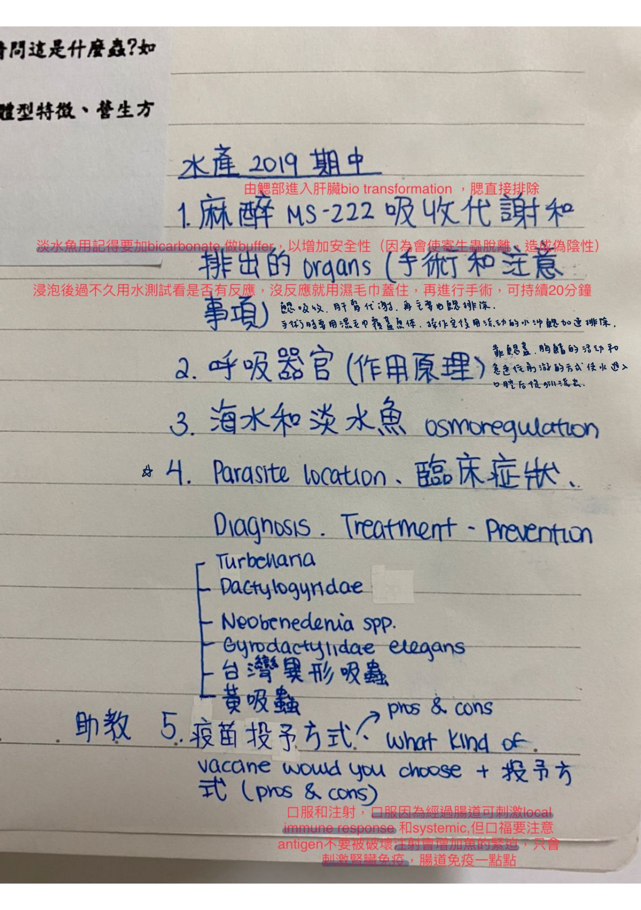
| 項目 | 手寫範圍 | 本站對應 |
|---|---|---|
| 1 | 麻醉 MS-222：吸收、代謝、排出的器官（手術與注意事項） | 見下方黃框 |
| 2 | 呼吸器官（作用原理） | 2022 Q5、生理上 p.38–生理上 p.44 |
| 3 | 海水魚與淡水魚 osmoregulation | 2022 Q8 |
| 4（★） | Parasite location、臨床症狀、診斷、治療、預防：Turbellaria、Dactylogyridae、Neobenedenia spp.、Gyrodactylus elegans、台灣異形吸蟲、黃吸蟲 | 寄生蟲講義尚未涵蓋；黃吸蟲 水質 p.60 |
| 助教 5 | 疫苗投予方式：pros & cons；What kind of vaccine would you choose + 投予方式（pros & cons） | 2022 Q10 |
手寫與紅藍字重點（非官方）
- MS-222：由鰓部吸收、肝臟 biotransformation、鰓直接排除（紅字）；藍字：鰓吸收、肝臟代謝、再主要由鰓排除。
- 手術注意（紅字）：淡水魚要加 bicarbonate 當 buffer 以增加安全性（因為會使寄生蟲脫離、造成偽陰性）；浸泡後過不久用水測試看是否有反應，沒反應就用濕毛巾蓋住再進行手術，可持續約 20 分鐘；藍字：手術時用濕毛巾覆蓋魚體，操作完用流動的水沖鰓加速排除。
- 呼吸器官（藍字）：靠鰓蓋、胸腔活動與急速往前游的方式使水進入口腔，口腔底部後面流出。
- 疫苗（紅字）：口服和注射；口服因經過腸道可刺激 local 與 systemic 免疫，但要注意抗原不要被破壞；注射會增加魚的緊迫，只會刺激腎臟免疫，腸道免疫一點點。
讀書補充Note - MS-222 為什麼要加緩衝劑、怎麼用（補充：依一般教科書／文獻，待核對）
MS-222（tricaine methanesulfonate）溶於水呈酸性，在軟水或低鹼度水中會使 pH 下降，造成魚緊迫甚至損傷，因此常加碳酸氫鈉（bicarbonate）緩衝；藥由鰓進入血液，肝臟代謝，再經鰓與腎排出。麻醉階段可用魚的平衡與對刺激反應判斷；手術時要持續讓水流經鰓（濕毛巾蓋體不蓋鰓、或用管子灌鰓）。劑量、麻醉時間與休藥期講義與學長姐筆記都沒寫，不補；使用於食用魚要依規範。
2022 水產蝦及無脊椎動物（Exam, HWC）
用 Keys 配對的英文病例題。每題要填 Disease 與（或）Etiology。這份卷沒有學長姐答案，下面每題的答案都是整理者依題目敘述推論，講義尚未涵蓋，答案為整理者推論。
原卷照片（4 張：Keys、題目 1–4、題目 5–9；姓名學號已有白塊遮蓋）
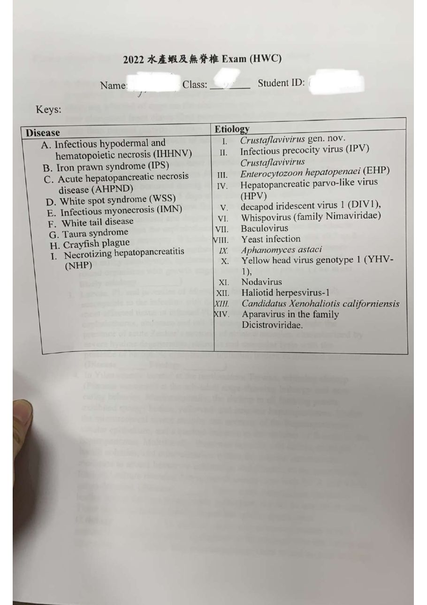
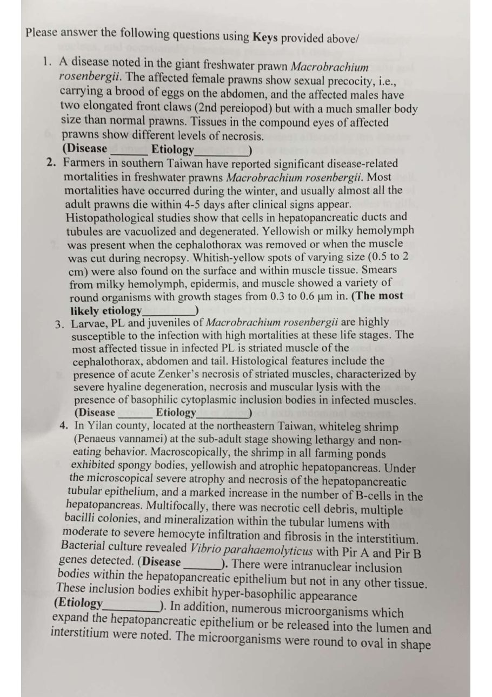
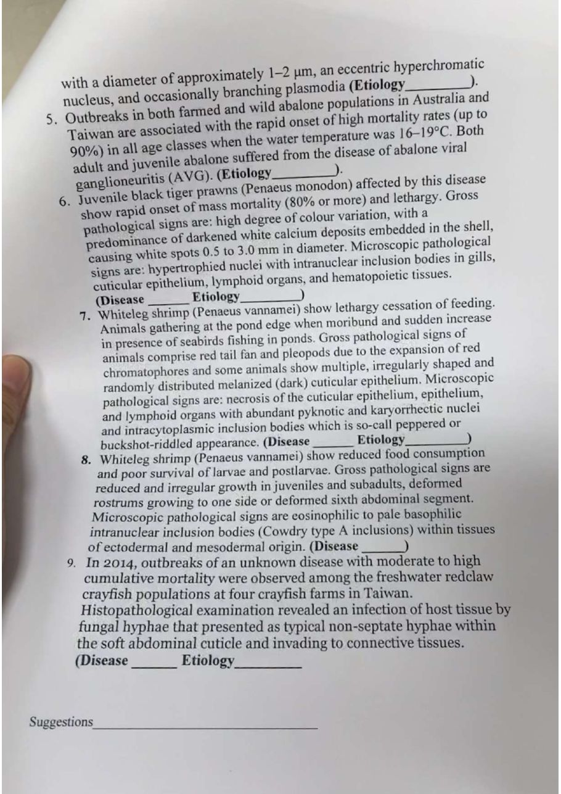
Keys（照原卷）
| Disease | Etiology |
|---|---|
| A. Infectious hypodermal and hematopoietic necrosis (IHHNV) | I. Crustaflavivirus gen. nov. |
| B. Iron prawn syndrome (IPS) | II. Infectious precocity virus (IPV) Crustaflavivirus |
| C. Acute hepatopancreatic necrosis disease (AHPND) | III. Enterocytozoon hepatopenaei (EHP) |
| D. White spot syndrome (WSS) | IV. Hepatopancreatic parvo-like virus (HPV) |
| E. Infectious myonecrosis (IMN) | V. decapod iridescent virus 1 (DIV1) |
| F. White tail disease | VI. Whispovirus (family Nimaviridae) |
| G. Taura syndrome | VII. Baculovirus |
| H. Crayfish plague | VIII. Yeast infection |
| I. Necrotizing hepatopancreatitis (NHP) | IX. Aphanomyces astaci；X. Yellow head virus genotype 1 (YHV-1)；XI. Nodavirus；XII. Haliotid herpesvirus-1；XIII. Candidatus Xenohaliotis californiensis；XIV. Aparavirus in the family Dicistroviridae |
Keys 在照片裡 I、II 兩列的斜體字換行，原卷排版有些混淆，所以第 1 題的病原欄位置標 ⚠ 待確認。
為什麼這樣答：關鍵字是 giant freshwater prawn、sexual precocity（性早熟）、雄蝦體型小卻有細長第二對步足螯、複眼壞死。這個組合對應 Keys 裡的 Iron prawn syndrome（鐵蝦）。病原是 Infectious precocity virus，屬 Crustaflavivirus（Keys I/II 兩列都含這個字）。
臨床意義：病蝦成長受阻、性早熟，產量與規格大受影響；診斷靠臨床加組織病理、分子檢測。講義尚未涵蓋，答案為整理者推論。
國考對照：本站題庫未出現 IPS。
為什麼這樣答：冬季低水溫、成蝦 4–5 天內死亡、血淋巴黃或乳白色、肌肉白濁白斑、抹片見圓形生物各生長階段（酵母），指向酵母菌感染（Keys 的 Yeast infection）。
臨床意義：低溫期、成蝦、血淋巴混濁是這個病的三個線索；診斷靠血淋巴抹片或壓片找酵母。
國考對照：101-2 第 70 題「泰國蝦感染酵母菌導致肌肉白濁、腫脹、大量死亡，最常發生在哪個季節」官方答案 C（秋末至冬季低水溫期）；2020 卷第 6 題也是同樣考點（見第 9 節）。講義尚未涵蓋，答案為整理者推論（以國考題支持）。
為什麼這樣答：淡水長臂大蝦幼苗到後蝦苗高死亡、橫紋肌的急性 Zenker’s 壞死、肌肉內嗜鹼性細胞質內包涵體＝白尾病。病原為 Macrobrachium rosenbergii nodavirus（MrNV，Keys 的 Nodavirus；另有 XSV 共同感染，見國考題）。
國考對照（官方）：109-2 第 72 題白尾病：病原包括 MrNV 與 XSV 合併感染（B）；113-2 第 70 題白尾病敘述，錯誤的是「病原為 Iridovirus」（A）；109-2 第 75 題泰國蝦苗急性大量死亡、切片＝Macrobrachium rosenbergii nodavirus（C）；100-2 第 65 題泰國蝦肌肉白濁、壞死、未檢出細菌＝Nodavirus（C）；2020 卷學長姐答案也是 B。講義尚未涵蓋，答案為整理者推論（國考題支持）。
為什麼這樣答：這題是「三重感染」：
① V. parahaemolyticus 帶 PirA／PirB 毒素基因＋肝胰腺小管上皮壞死、脫落（B 細胞（B-cells）增多、小管上皮壞死是題目給的病變）＝AHPND；
② 只在肝胰腺上皮出現核內嗜鹼性包涵體＝HPV（hepatopancreatic parvo-like virus）；
③ 上皮內 1–2 µm 圓形至卵圓、偏心深染核、偶有分支原質團＝微孢子蟲 EHP。
臨床意義：同一批蝦同時有細菌、病毒、微孢子蟲，臨床上常見；寫題時三個答案不要互相覆蓋。為什麼不是 NHP？NHP（Keys I）是細胞內細菌病原（本題 Keys 沒有對應的病原名），而本題已給了 Vibrio parahaemolyticus 與 PirAB，所以選 AHPND。
2020 卷對照：AHPND 問病原，學長姐選 Vibrio parahaemolyticus（見第 9 節）。講義尚未涵蓋，答案為整理者推論。
為什麼這樣答：題目直接給病名 AVG（abalone viral ganglioneuritis，鮑魚病毒性神經節炎），Keys 的病原是 Haliotid herpesvirus-1（疱疹病毒）。
臨床意義：病變集中在神經組織（見 108 上第 1 題：cerebral、pleuropedal、buccal ganglia 的壞死與血球浸潤）。常見延伸問法：九孔鮑疱疹病毒的切片特徵（2020 卷第 2 題）、與 withering syndrome（Candidatus Xenohaliotis californiensis，Keys XIII）的鑑別。
講義尚未涵蓋，答案為整理者推論。
為什麼這樣答：草蝦幼蝦、80% 以上急性大量死亡、殼內白斑 0.5–3.0 mm（鈣沉積）、鰓、表皮、淋巴器官、造血組織核內包涵體與核肥大＝白點症。病原為白點症病毒（Nimaviridae，Whispovirus）。
國考對照（官方）：106-1 第 75 題「引起蝦白斑症候群的病原」＝whispovirus（D）；113-2 第 68 題＝Nimaviridae 的 Whispovirus（A）；105-2 第 76 題錯誤敘述＝「只感染海水十足目」（B；白點病毒宿主範圍廣）；104-2 第 76 題病蝦白斑為病毒（D）。講義尚未涵蓋，答案為整理者推論（國考題支持）。
為什麼這樣答：白蝦、紅尾扇與游泳足（紅色素細胞擴張）、不規則黑色素化、表皮與淋巴器官壞死，細胞質內「胡椒粉／霰彈槍」狀包涵體＝陶拉症候群。病原是 Dicistroviridae（以前稱 Cripavirus，新分類為 Aparavirus）。
國考對照（官方）：101-1 第 66 題、108-1 第 75 題陶拉病毒主要感染白蝦（C）；112-2 第 67 題 Taura syndrome 病原＝cripavirus（C）；113-2 第 69 題陶拉病毒感染外胚層及中胚層細胞，急性期標的為表皮（C）；109-1 第 75 題白蝦尾部末端變紅、殼表面黑斑＝Taura syndrome（D）；104-1 第 70 題錯誤敘述＝「感染以草蝦為主」（C）。這是國考出現次數最多的蝦病之一。講義尚未涵蓋，答案為整理者推論（國考題支持）。
為什麼這樣答：歪向一側的額角、第六腹節畸形、生長不整齊（runt-deformity syndrome 的特徵）＋嗜酸性至淡嗜鹼性 Cowdry type A 核內包涵體，分布在外胚層與中胚層來源的組織＝IHHNV。
國考對照（官方）：107-1 第 67 題「何種疾病在罹病蝦肝胰腺細胞可形成嗜酸性核內包涵體」＝IHHNV（C）；103-2 第 76 題 IHHNV 主要感染藍蝦（題目敘述 A 為正確敘述，答案是敘述 D 錯誤）。
講義尚未涵蓋，答案為整理者推論（國考題支持）。
為什麼這樣答：淡水螯蝦、無隔膜（non-septate）菌絲侵入軟腹部角質層與結締組織＝蝦蟹瘟（crayfish plague），病原是卵菌類 Aphanomyces astaci。
國考對照：115-2 第 76 題 crayfish plague（官方答案尚未取得，不當標準答案）。講義尚未涵蓋，答案為整理者推論。
每題都是「Signalment／History／Clinical signs／Gross／Histopath → 病名與病原」的英文病例。答題時先抓宿主與階段（Macrobrachium 或 Penaeus vannamei、PL 或成蝦）、季節與水溫、最具特徵的病變（Zenker 壞死、核內包涵體、白斑、紅尾扇、PirAB），再配對 Keys。學長姐 2022（B07）心得也特別提醒「病原要會認英文名字，有一題三角形包涵體的病源，選項只有英文沒有中文」（見第 11 節）。
讀書補充Note - 配對卷怎麼縮小範圍（補充：依一般教科書／文獻，待核對）
- 宿主：Macrobrachium rosenbergii（淡水長臂大蝦）→ IPS、白尾病、酵母菌；P. vannamei → 陶拉、IHHNV、AHPND、EHP；P. monodon → 白點症；鮑魚 → AVG；螯蝦 → 蝦蟹瘟。
- 包涵體位置與性質：核內嗜鹼性（HPV、WSSV）、核內嗜酸性（IHHNV Cowdry A）、細胞質內（陶拉的霰彈槍狀）、三角形（baculovirus，2022 B07 心得）。
- 以上為一般教科書的歸納，Keys 內的病原分類（如 IPV、Aparavirus）為新分類，若老師用舊名要自己轉換。
2020 水產動物疾病無脊椎動物
照片 3 張：前 9 題（看圖、選擇）、「獸醫師考古題」6 題＋細菌題 1 題、加分題。手寫與圈選答案都是學長姐的，非官方。多數題目有對應的國考題，下面用國考官方答案核對學長姐的選擇。
原卷照片（3 張，姓名學號已遮蓋）
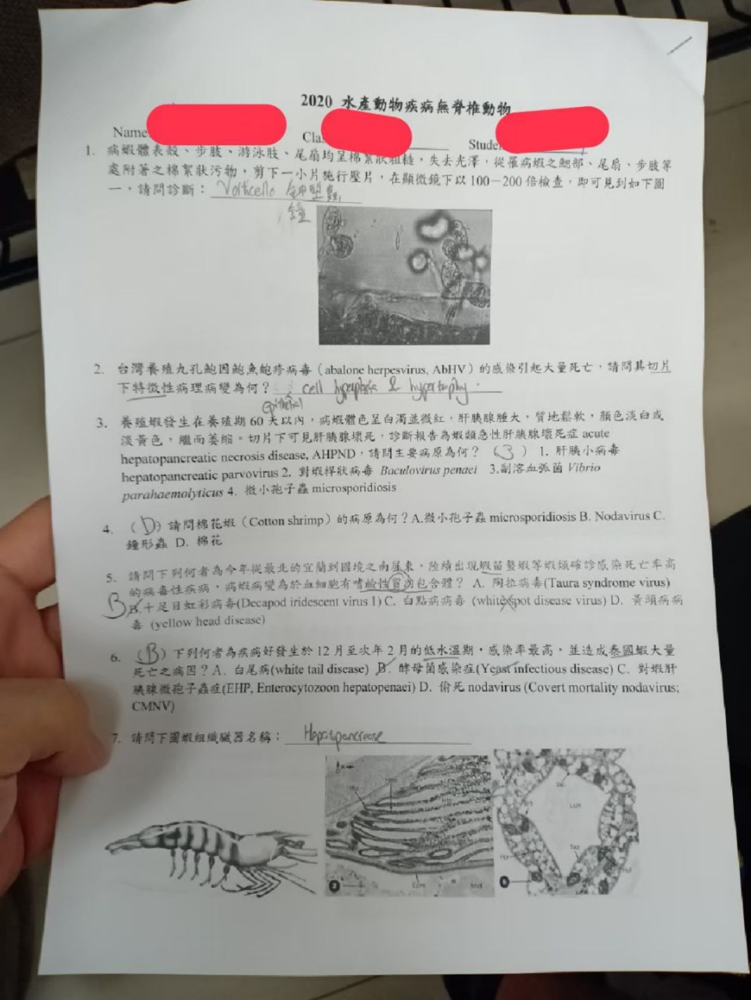
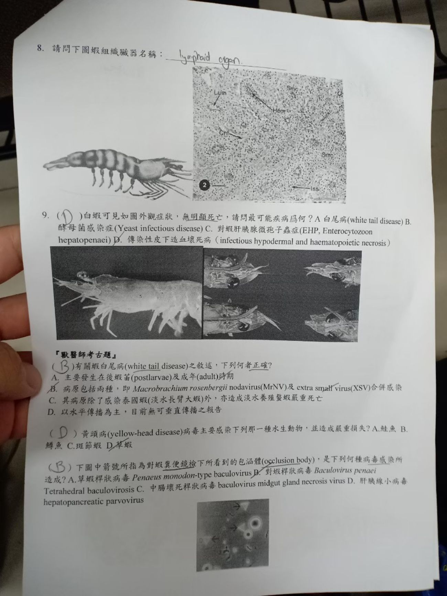
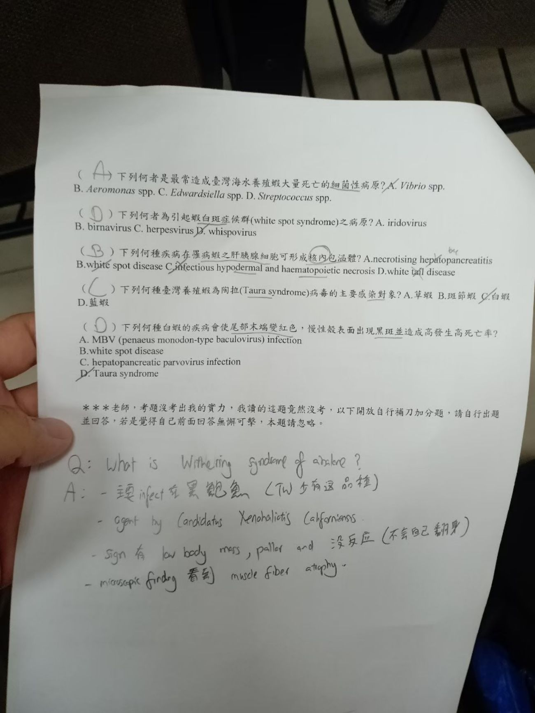
為什麼這樣答：棉絮狀附著物、壓片 100–200 倍見鐘形（有柄）的固著纖毛蟲＝鐘形蟲／Vorticella 類。學長姐在 Vorticella 旁寫了「鐘」字。
臨床意義：固著纖毛蟲是外寄生，多與水質差、有機物多有關；先改善水質與換水，再依寄生蟲處置（補充：依一般教科書）。講義尚未涵蓋，答案為整理者推論。
學長姐答案：照片中手寫「cell hyperplasia & hypertrophy」並有插入字（字跡難辨），與 108 上第 1 題的病變描述不一致：108 上寫病變局限在神經組織（cerebral、pleuropedal、buccal ganglia 的細胞增多與壞死、血球浸潤），2022 卷也稱 AVG＝病毒性神經節炎（ganglioneuritis）。
整理者建議：AbHV 的特徵性病變以神經節炎與神經組織壞死作答（見 108 上第 1 題），學長姐的答案先不採用，⚠ 待核對老師當年標準答案。講義尚未涵蓋，答案為整理者推論。
為什麼這樣答：AHPND 的病原是帶 PirA／PirB 毒素質體的副溶血弧菌（2022 卷第 4 題 Pir A/B 基因的敘述同此）。學長姐選 (3) 正確。
為什麼其他選項錯：(1) HPV、(2) B. penaei 是病毒，(4) 微孢子蟲（EHP）是另一個病原，與 AHPND 共同出現時要分開寫（見 2022 Q4）。
講義尚未涵蓋，答案為整理者推論。
學長姐答案：圈選 (D)「棉花」。這個選項看起來像是題目的玩笑選項，與一般認知不一致。
整理者推論：「棉花蝦」（cotton shrimp）一般指肌肉白濁呈棉花狀的蝦，常與微孢子蟲（A）相關（補充：依一般文獻，待核對）。這題答案 ⚠ 待確認老師當年的標準答案，不要照學長姐的 (D) 作答。講義尚未涵蓋，答案為整理者推論。
為什麼這樣答：血細胞有嗜鹼性細胞質內包涵體，且是「今年（2020 年）」新近出現在蝦、螯蝦的高死亡率病毒，對應十足目虹彩病毒 1（DIV1；2022 卷 Keys V 也有列出）。
待確認：講義沒有，這題的標準答案以老師為準；本站國考題庫沒有 DIV1 的題目。講義尚未涵蓋，答案為整理者推論。
為什麼這樣答：低水溫期、泰國蝦大量死亡＝酵母菌感染（見 2022 Q2）。白尾病好發於蝦苗期，EHP 是對蝦的慢性病，CMNV 是偷死（隱性死亡）。
國考對照（官方）：101-2 第 70 題＝秋末至冬季低水溫期（C）。
為什麼這樣答：小管狀、上皮細胞內有空泡的組織＝肝胰腺（hepatopancreas）。這種組織學辨識題會連到 AHPND、HPV、EHP 的診斷，因為三者都以肝胰腺為標的（見 2022 Q4）。
講義尚未涵蓋，答案為整理者推論；組織圖需看原卷照片。
為什麼這樣答：蝦的淋巴器官（lymphoid organ，Oka organ）在 WSSV、陶拉、YHV 等病毒的組織病理中常被觀察（本頁 2022 Q6、Q7 都提到 lymphoid organs）。學長姐答 lymphoid organ。
待確認：照片中標示縮寫（Lum、Hem、Cnf 等）看不清，整理者無法獨立核對，⚠ 待確認。
為什麼這樣答：白蝦（P. vannamei）、外觀畸形（額角彎曲）、無明顯死亡＝IHHNV 的 runt-deformity 特徵；見 2022 Q8。
講義尚未涵蓋，答案為整理者推論。
「獸醫師考古題」6 題＋細菌題（卷上，學長姐圈答案）
2020 卷在 Q9 之後直接放了國考題。下表把學長姐的選擇與本站國考題庫的官方答案逐題核對：
| 2020 卷題目 | 學長姐選 | 國考對照 | 核對 |
|---|---|---|---|
| 蝦白尾病敘述何者正確（MrNV＋XSV 合併感染） | B | 109-2 第 72 題，官方答案 B | 一致 |
| 黃頭病病毒主要感染哪一種水生動物（草蝦） | D | 105-1 第 73 題，官方答案 D | 一致 |
| 對蝦糞便鏡檢包涵體（occlusion body）是何種病毒（Baculovirus penaei） | B | 105-1 第 72 題，官方答案 B | 一致 |
| 最常造成臺灣海水養殖蝦大量死亡的細菌（Vibrio spp.） | A | 本站題庫未找到同題 | 待核對（一般認知 Vibrio） |
| 引起蝦白斑症候群之病原（whispovirus） | D | 106-1 第 75 題，官方答案 D | 一致 |
| 蝦肝胰腺細胞可形成核內包涵體的疾病（選項：A NHP、B WSD、C IHHNV、D 白尾病；題幹無「嗜酸性」） | B | 107-1 第 67 題（題幹寫「嗜酸性核內包涵體」），官方答案 C（IHHNV） | ⚠ 不一致，學長姐選 B；以官方 C 為準，題幹少了「嗜酸性」，待確認 |
| 臺灣養殖蝦為陶拉病毒的主要感染對象（白蝦） | C | 101-1 第 66 題、108-1 第 75 題，官方答案 C | 一致 |
| 白蝦疾病尾部末端變紅、殼表黑斑（Taura syndrome） | D | 109-1 第 75 題，官方答案 D | 一致 |
加分題（卷末）
為什麼這樣答：學長姐手寫答案與 2022 卷 Keys XIII（Candidatus Xenohaliotis californiensis）與 108 上第 1 題的選項（Withering syndrome）對得起來。非官方。
補充（依一般文獻，待核對）：Withering syndrome 的病原是立克次體樣細菌，感染鮑魚消化道上皮，使鮑魚消瘦、足肌萎縮、附著力下降；與 AVG（疱疹病毒，神經組織）要分開。講義尚未涵蓋，答案為整理者推論。
108 上學期水產疾病學 invertebrates（只拍到前 3 題）
這是「請將正確答案圈起來」的英文選擇題。融合 PDF 只收到前 3 題的前半，第 3 題後面的選項與後續題目照片沒有，⚠ 資料不完整。姓名學號已用黑塊遮蓋。
原卷照片（1 張，姓名學號已遮蓋）
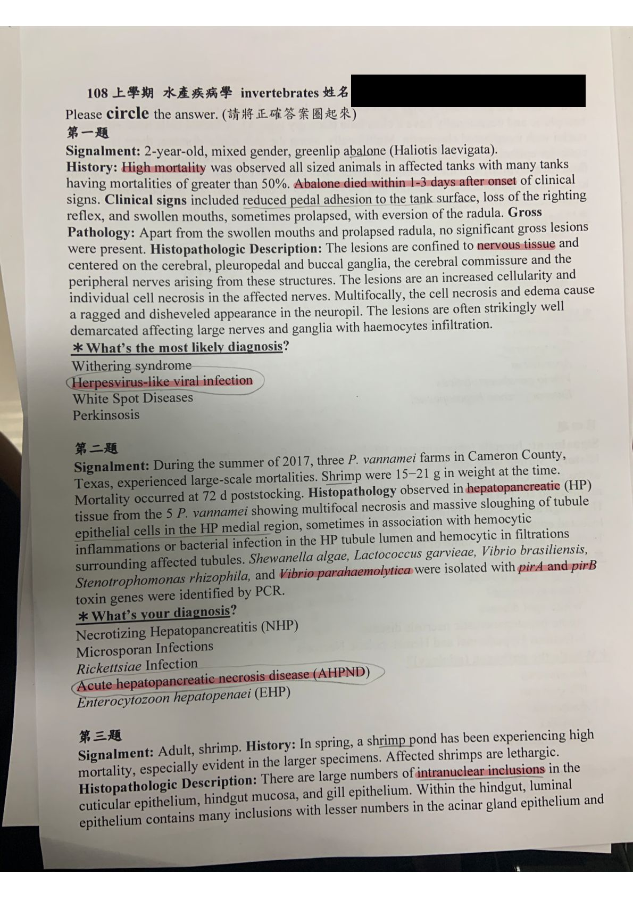
為什麼這樣答：病變局限在神經組織（腦、足側、口神經節與外周神經），神經節壞死、血球浸潤，加上 1–3 天內死亡、嘴腫脹、齒舌外翻、失去翻身反射＝鮑魚病毒性神經節炎（AVG），病原是疱疹病毒（對應 2022 Q5）。學長姐答案正確。
為什麼其他選項錯：Withering syndrome 是消化道的細菌性感染，肌肉萎縮；White spot disease 是蝦的疾病；Perkinsosis 是原蟲（Perkinsus）感染鮑與貝類，病變在組織與血球，不是局限於神經。（後兩者依一般文獻，待核對）講義尚未涵蓋，答案為整理者推論。
為什麼這樣答：多種細菌被分離，但只有 V. parahaemolyticus 帶 pirA／pirB 毒素基因，加上 HP 小管上皮壞死、大量脫落、放養後 72 天內大量死亡＝AHPND。分離到其他細菌（Shewanella、Lactococcus 等）是續發或伴隨，不是診斷依據。
臨床意義：診斷關鍵是毒素基因 PCR，而不是單看「分離到弧菌」。講義尚未涵蓋，答案為整理者推論。
可以先說的：核內包涵體分布在表皮（角質上皮）、後腸黏膜、鰓上皮，與 2022 卷第 6 題白點症（核內包涵體在鰓、表皮、淋巴器官）類似，但不能僅憑被截斷的敘述指定病名。⚠ 待確認；若取得完整卷再補。
2022（B07）三位老師出題心得（學長姐回憶）
2022 年學長姐按三位老師分別寫下的考試心得。這是回憶，不是官方資料；老師全部換人，只當題型參考。
| 部分 | 題型與提醒（學長姐） | 整理者備註 |
|---|---|---|
| 蝦與無脊椎老師 | ① 考很多「什麼病主要感染什麼蝦」（選擇），這個病的肉眼病變以及顯微病理特徵（手寫）；② 最後一題問答要寫三個肝胰腺壞死的病原和診斷方式；③ 有一題問三角形包涵體的病源，選項只有英文沒有中文，所以要會認病原英文名字 | 與2022 配對卷、2020 同型；肝胰腺壞死的三個病原見 2022 Q4（AHPND、HPV、EHP；NHP 可再補）。三角形包涵體＝Baculovirus（補充：依一般教科書，待核對） |
| 細菌老師 A | 考單複選（一題可能要選一個或多個選項），不考古；喜歡給症狀問可能是什麼病原；沒有考 agar；有一題問 Nocardia 和 mycobacteria 的比較；手寫題像考古（要算加多少抗生素到飼料裡面那題），題型一樣，給的藥和藥品濃度不一樣 | 講義尚未涵蓋；若要準備，先整理 Nocardia 與 Mycobacterium 的比較表（國考 101-1 第 70 題、103-2 第 75 題、107-2 第 65 題可練） |
| 細菌老師 B | 參考就好，從不考古，全手寫：① 三個病魚剖檢會看到多發白色結節的病原、診斷方式與診斷依據（病原不限範圍，只要這學期教過的）；② Aeromonas spp. 分 motile 與 non-motile，後者又分 typical 與 atypical，為什麼有運動性與非運動性的分別？三種類別各舉一個常見病原、主要感染魚類、存活環境、菌落會不會產生色素、症狀；③ 魚腸炎的病原、症狀、診斷方式（甚至是期中範圍） | 結節題與 107 Q2 同型（見第 5 節）；Aeromonas 的 motile／non-motile 分類可用國考題練習（103-2 第 68 題、103-2 第 73 題、104-1 第 72 題）。魚腸炎：國考 101-2 第 59 題六鞭毛蟲症最明顯病徵＝腸炎（C） |
重複考點表與國考對照
哪些題年年出現？下表依考古年份整理（「✓」＝該年出現；括號內是題號）。講義位置可直接點進去複習。
重複考點表
| 考點 | 2019 | 2022 | 2023 | 109 | 107 | 105 | 本站講義 |
|---|---|---|---|---|---|---|---|
| 養殖模式優缺點 | ✓ Q1 | ✓ Q1 | ✓ Q3 | ✓ Q4 | 水質頁 第 2 節 | ||
| 水質參數（三項／全部） | ✓ Q2 | ✓ Q2 | ✓ Q1（氨） | 水質頁 第 4–6 節 | |||
| 診斷流程／死亡曲線 | ✓ Q1 | ✓ Q1 | 水質頁 第 3 節 | ||||
| 魚類趨向性 | ✓ Q4 | ✓ Q3 | 生理上 p.24 | ||||
| 氣體交換（逆／順水流） | ✓ 呼吸器官 | ✓ Q5 | ✓ Q4、Q5 | ✓ Q6 | 生理上 p.40、生理上 p.44 | ||
| Bohr／Root effect | ✓ Q6 | 預告（未出） | ✓ Q7 | ✓ Q5 | ✓ Q7（鰾） | 生理上 p.51 | |
| 滲透壓／氯細胞 | ✓ | ✓ Q8 | ✓ Q5、Q6 | ✓ Q6 | ✓ Q8、Q9 | 生理下 p.41、生理下 p.46 | |
| 免疫器官 | ✓ Q9 | ✓ Q6 | ✓ Q4 | 免疫 p.53 | |||
| 疫苗投予方式 | ✓（助教 5） | ✓ Q10 | ✓（加分） | 免疫 p.86–免疫 p.90 | |||
| 浮頭原因 | ✓ Q8 | 水質頁 第 4 節 | |||||
| 白色結節／爛鰓／寄生蟲 | ✓（寄生蟲） | ✓ Q2、Q3 | ✓ Q2–Q6 | 講義尚未涵蓋（黃吸蟲除外） | |||
| 蝦與無脊椎病例 | ✓ 配對卷 | 講義尚未涵蓋（2020、108 上同型） |
「預告（未出）」＝助教預告會考，但學長姐回憶實際題目沒有。年份為學長姐照片與回憶所見，可能有遺漏。
國考專區對照（獸醫傳染病學）
本站的國考題庫目前只有獸醫傳染病學考科。水質、魚類生理、免疫與疫苗幾乎沒有對應國考題（只有 102-2 第 65 題油質疫苗），但蝦與魚的病原題很多，對應本卷後半部：
| 考古題型 | 國考題（官方答案） | 重點 |
|---|---|---|
| 白點症 WSSV（2022 Q6、2020） | 106-1 #75（D）、113-2 #68（A）、105-2 #76（B 為錯誤敘述）、104-2 #76（D） | whispovirus、Nimaviridae、宿主範圍廣、殼內白斑 |
| 陶拉 Taura（2022 Q7、2020） | 101-1 #66、108-1 #75、112-2 #67、113-2 #69、109-1 #75、104-1 #70 | 白蝦、cripavirus（Dicistroviridae）、紅尾、霰彈槍狀包涵體 |
| 白尾病（2022 Q3、2020） | 109-2 #72（B）、113-2 #70（A 為錯誤敘述）、109-2 #75、100-2 #65 | MrNV＋XSV、泰國蝦苗、不是虹彩病毒 |
| IHHNV（2022 Q8、2020 Q9） | 107-1 #67（C）、103-2 #76 | 嗜酸性核內包涵體 Cowdry A、畸形、藍蝦 |
| 桿狀病毒（2020） | 105-1 #72（B）、97-2 #80（A）、102-2 #68、103-1 #71 | 糞檢包涵體、肝胰腺與中腸上皮 |
| 黃頭病（2020） | 105-1 #73（D） | 草蝦 |
| 酵母菌（2022 Q2、2020 Q6） | 101-2 #70（C） | 泰國蝦、低水溫期 |
| 魚類結節（107 Q2、105 Q3） | 101-2 #58、100-2 #70、109-1 #71、107-1 #77、103-2 #75、101-2 #69 | 魚孢黴、微孢子蟲、Glugea、Photobacterium、Nocardia |
| 爛鰓／浮頭（107 Q3、109 Q8） | 101-2 #61（C）、106-1 #74（C）、106-2 #77（B）、103-1 #65（D） | 柱狀病 Flavobacterium columnare、鰓黴病 |
| 單殖吸蟲／指環蟲（105 Q6） | 102-1 #65（C）、103-1 #70（C）、101-2 #67（B）、111-2 #72（一律給分） | 生活史只在魚體、鰓或體表鏡檢 |
| 殺蟲藥（109 Q2、105 Q5） | 105-1 #67（B）、101-2 #62（B）、115-2 #72（尚未取得） | 有機磷（三氯松）、藥浴 |
| 油質疫苗（2022 Q10） | 102-2 #65（B） | Aeromonas salmonicida、鮭魚 |
「官方答案：尚未取得」的題（例如 100-1 多題、115-2 部分題）不當標準答案；本表引用題號請回到本站國考頁核對原題。「待核對」的補充說法請以老師與教科書為準。